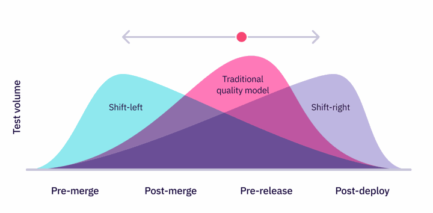
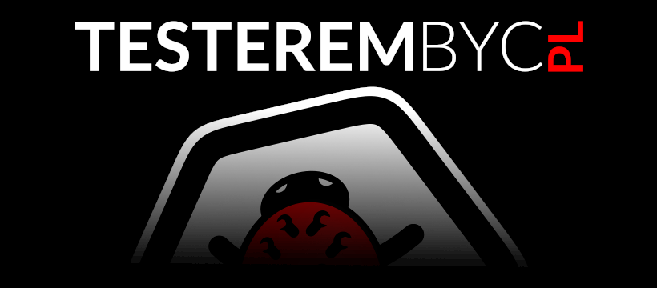

<!DOCTYPE html>
<html lang="en">
  <head>
    <meta charset="utf-8" />
    <meta name="viewport" content="width=device-width, initial-scale=1.0, maximum-scale=1.0, user-scalable=no" />

    <title></title>
    <link rel="stylesheet" href="dist/reveal.css" />
    <link rel="stylesheet" href="dist/theme/blood.css" id="theme" />
    <link rel="stylesheet" href="plugin/highlight/zenburn.css" />
	<link rel="stylesheet" href="css/layout.css" />
	<link rel="stylesheet" href="plugin/customcontrols/style.css">
	<link rel="stylesheet" href="plugin/chalkboard/style.css">


    <script defer src="dist/fontawesome/all.min.js"></script>

	<script type="text/javascript">
		var forgetPop = true;
		function onPopState(event) {
			if(forgetPop){
				forgetPop = false;
			} else {
				parent.postMessage(event.target.location.href, "app://obsidian.md");
			}
        }
		window.onpopstate = onPopState;
		window.onmessage = event => {
			if(event.data == "reload"){
				window.document.location.reload();
			}
			forgetPop = true;
		}

		function fitElements(){
			const itemsToFit = document.getElementsByClassName('fitText');
			for (const item in itemsToFit) {
				if (Object.hasOwnProperty.call(itemsToFit, item)) {
					var element = itemsToFit[item];
					fitElement(element,1, 1000);
					element.classList.remove('fitText');
				}
			}
		}

		function fitElement(element, start, end){

			let size = (end + start) / 2;
			element.style.fontSize = `${size}px`;

			if(Math.abs(start - end) < 1){
				while(element.scrollHeight > element.offsetHeight){
					size--;
					element.style.fontSize = `${size}px`;
				}
				return;
			}

			if(element.scrollHeight > element.offsetHeight){
				fitElement(element, start, size);
			} else {
				fitElement(element, size, end);
			}		
		}


		document.onreadystatechange = () => {
			fitElements();
			if (document.readyState === 'complete') {
				if (window.location.href.indexOf("?export") != -1){
					parent.postMessage(event.target.location.href, "app://obsidian.md");
				}
				if (window.location.href.indexOf("print-pdf") != -1){
					let stateCheck = setInterval(() => {
						clearInterval(stateCheck);
						window.print();
					}, 250);
				}
			}
	};


        </script>
  </head>
  <body>
    <div class="reveal">
      <div class="slides"><section  data-markdown><script type="text/template">
# Tester manualny to za mało?</script></section><section  data-markdown><script type="text/template">## O mnie
- &shy;<!-- .element: class="fragment" data-fragment-index="1" -->tester od 14 lat
- &shy;<!-- .element: class="fragment" data-fragment-index="2" -->od 10 lat automatyzuje w 🐍 
- &shy;<!-- .element: class="fragment" data-fragment-index="3" -->testowałem: front-end, back-end, IoT i cierpliwość innych 😜
- &shy;<!-- .element: class="fragment" data-fragment-index="4" -->byłem: test leadem, tester, "adminem" (test env i CI/CD)
- &shy;<!-- .element: class="fragment" data-fragment-index="5" -->prelegent: PyCon, PySilesia, SlonzaczQA
- &shy;<!-- .element: class="fragment" data-fragment-index="6" -->wystapienia publiczne: ŁuczniczQA, TestITka, ITea Morning
- &shy;<!-- .element: class="fragment" data-fragment-index="7" -->blogger: 🐞 testerembyc.pl
- &shy;<!-- .element: class="fragment" data-fragment-index="8" -->początkujący vlogger na YouTube
- &shy;<!-- .element: class="fragment" data-fragment-index="9" -->hobby: DIY oraz wszelkie formy aktywności fizycznej z rodziną
</script></section><section  data-markdown><script type="text/template">## O czym opowiem?
- &shy;<!-- .element: class="fragment" data-fragment-index="1" -->Czy testerzy to zawód na wyginięciu?
- &shy;<!-- .element: class="fragment" data-fragment-index="2" -->Czy możemy jakoś się przed tym bronić?
- &shy;<!-- .element: class="fragment" data-fragment-index="3" -->Czy broniąc się, możemy już teraz lepiej zarabiać?
</script></section><section  data-markdown><script type="text/template">## Czy wyginiemy?
- &shy;<!-- .element: class="fragment" data-fragment-index="1" -->Zastąpi nas AI
- &shy;<!-- .element: class="fragment" data-fragment-index="2" -->No/Low Code
- &shy;<!-- .element: class="fragment" data-fragment-index="3" -->Lepsze języki programowania
- &shy;<!-- .element: class="fragment" data-fragment-index="4" -->Ktoś tańszy nas zastąpi

<aside class="notes"><p>AI:</p>
<ul>
<li>to ograniczone uczenie maszynowe</li>
<li>w narzędziach wspomaga, a nie zastępuje (np. potrafi naprawić zepsute ścieżki do elementów HTML)</li>
</ul>
<p>No/Low Code:</p>
<ul>
<li>narzędzia wspomagające testowanie na zasadzie nagraj i odtwórz (np. BugBug.io - testowanie UI)</li>
<li>prototypowanie oprogramowania, ale z dużymi ograniczeniami</li>
</ul>
<p>Lepsze języki programowania:</p>
<ul>
<li>wspomaganie programistów to coś o czym mówi się od dawna, ale nikomu jeszcze się nie udało tego dokonać</li>
<li>tworzenie lepszych bibliotek w danych językach, ale to nie rozwiązuje wszystkich problemów</li>
<li>automatyczne tworzenie testów na podstawie kodu (raczej do unit testów)</li>
</ul>
<p>Ktoś tańszy nas zastąpi:</p>
<ul>
<li>stosunek jakości do ceny</li>
<li>globalne braki specjalistów IT</li>
</ul>
</aside></script></section><section  data-markdown><script type="text/template">## Shift Left/Right?

<p style="line-height: 0" class="reset-paragraph image-paragraph"></img></p>

<!-- .element: style="font-size: 0.5em" class="fragment" data-fragment-index="1" -->
Źródło: https://www.launchableinc.com/articles/shift-left-automated-tests-with-launchable
<!-- .element: style="font-size: 0.5em" class="fragment" data-fragment-index="1" -->

<aside class="notes"><p>Tradycyjny model (testy w fazie implementacji): </p>
<ul>
<li>testy E2E</li>
<li>testy integracyjne</li>
<li>testy bezpieczeństwa</li>
</ul>
<p>Shift Left (testy w fazie projektowej)</p>
<ul>
<li>testowanie wymagań</li>
<li>testy jednostkowe</li>
</ul>
<p>Shift Right (testy w fazie wdrożenia/utrzymania):</p>
<ul>
<li>monitoring wydajności</li>
<li>testy A/B</li>
<li>monitoring produkcji</li>
</ul>
</aside></script></section><section  data-markdown><script type="text/template"># Jak się bronić,<br>przeżyć<br>i lepiej zarabiać?
<!-- .element: style="font-size: 3em" -->
</script></section><section  data-markdown><script type="text/template">## Kim jest tester?
Wykwalifikowany profesjonalista zaangażowany w proces testowania
<!-- .element: class="fragment" data-fragment-index="1" -->
</script></section><section  data-markdown><script type="text/template">
Źródło: Ministerstwo Rodziny i Polityki Społecznej (https://psz.praca.gov.pl/)
<!-- .element: style="font-size: 0.5em" -->

####  Tester oprogramowania komputerowego

> [...]  weryfikuje poprawność działania oprogramowania oraz raportuje wykryte błędy i niezgodności ze specyfikacją
<!-- .element: style="font-size: 0.75em" class="fragment" data-fragment-index="2" -->

####  Tester SYSTEMÓW TELEINFORMATYCZNYCH

> Odpowiada za przeprowadzenie testów funkcjonalności i wydajności systemów teleinformatycznych
<!-- .element: style="font-size: 0.75em" class="fragment" data-fragment-index="3" -->
> [...] zajmuje się oceną możliwości i kompatybilności poszczególnych systemów
<!-- .element: style="font-size: 0.75em" class="fragment" data-fragment-index="4" -->

<aside class="notes"><p>Obecnie te definicje mocno się przeplatają, np.</p>
<ul>
<li>oprogramowanie typu SaaS,</li>
<li>IoT</li>
</ul>
</aside></script></section><section  data-markdown><script type="text/template">#### Zadania zawodowe

- &shy;<!-- .element: class="fragment" data-fragment-index="1" -->tworzenie planu testów, scenariuszy i przypadków testowych
- &shy;<!-- .element: class="fragment" data-fragment-index="2" -->wykonywanie testów: funkcjonalności, wydajności i integracyjnych
- &shy;<!-- .element: class="fragment" data-fragment-index="3" -->testowanie aplikacji webowych i mobilnych
- &shy;<!-- .element: class="fragment" data-fragment-index="4" -->wykonywanie testów automatycznych
- &shy;<!-- .element: class="fragment" data-fragment-index="5" -->wykonywanie testów za pomocą narzędzi wspomagających testowanie
- &shy;<!-- .element: class="fragment" data-fragment-index="6" -->opracowywanie dokumentacji testowej oraz raportowanie błędów
- &shy;<!-- .element: class="fragment" data-fragment-index="7" -->przygotowywanie i utrzymanie środowisk testowych/stanowiska pracy (uwzględniając: BHP, ochrony ppoż., ochrony środowiska)
- &shy;<!-- .element: class="fragment" data-fragment-index="8" -->współpracowanie z analitykami, projektantami i programistami na każdym etapie przeprowadzania testów
</script></section><section  data-markdown><script type="text/template">#### Wymagania

- &shy;<!-- .element: class="fragment" data-fragment-index="1" -->wykształcenie wyższe pierwszego stopnia
- &shy;<!-- .element: class="fragment" data-fragment-index="2" -->lub hobbysta/samouk z wykształceniem średnim oraz posiadający wiedzę branżową
- &shy;<!-- .element: class="fragment" data-fragment-index="3" -->biegła obsługa komputera
- &shy;<!-- .element: class="fragment" data-fragment-index="4" -->znajomość procesu tworzenia oprogramowania
- &shy;<!-- .element: class="fragment" data-fragment-index="5" -->znajomość języka angielskiego
- &shy;<!-- .element: class="fragment" data-fragment-index="6" -->znajomość narzędzi
- &shy;<!-- .element: class="fragment" data-fragment-index="7" -->znajomość języków programowania

<aside class="notes"><p>Wykształcenie wyższe pierwszego stopnia to licencjat lub inżynier.
Wiedza branżowa w zakresie testowanego oprogramowania (np. księgowość).
Język angielski do czytania ze zrozumieniem dokumentacji technicznej.</p>
</aside></script></section><section  data-markdown><script type="text/template">## Po co nam tak sformalizowana definicja?

<aside class="notes"><p>Czy chodzi o jakiś nowy rodzaj certyfikatu lub innego potwierdzenia zdobytych umiejętności lub wiedzy? Zanim na to odpowiemy, poznajmy jeszcze jedną definicję.</p>
</aside></script></section><section  data-markdown><script type="text/template"># Craftsmanship
<!-- .element: style="font-size: 3em" -->
## Rzemiosło
<!-- .element: style="font-size: 2em" class="fragment" data-fragment-index="1" -->
> Zawodowe wykonywanie [działalności gospodarczej](https://pl.wikipedia.org/wiki/Dzia%C5%82alno%C5%9B%C4%87_gospodarcza "Działalność gospodarcza") przez osobę fizyczną, posiadającą udokumentowane [kwalifikacje (zawodowe)](https://pl.wikipedia.org/wiki/Kwalifikacje_zawodowe "Kwalifikacje zawodowe") do wykonywania danej działalności gospodarczej we własnym imieniu i na swój rachunek,
<!-- .element: style="font-size: 0.75em" class="fragment" data-fragment-index="2" -->
> przy zatrudnieniu niewielkiej liczby pracowników, których praca ma na celu wspieranie działalności rzemieślnika.
<!-- .element: style="font-size: 0.75em" class="fragment" data-fragment-index="3" -->
Źródło: https://pl.wikipedia.org/wiki/Rzemiosło
<!-- .element: style="font-size: 0.5em" class="fragment" data-fragment-index="3" -->

<aside class="notes"><p>Do zastanowienia, czy automatyzacja to zastępstwo zatrudnienia niewielkiej liczby pracowników? Patrząc na, że w fabryce też są roboty, które zastąpiły pewnych pracowników, to odpowiedź może być jedna, choć niezbyt wygodna.</p>
</aside></script></section><section  data-markdown><script type="text/template">## Kwalifikacje zawodowe

- &shy;<!-- .element: class="fragment" data-fragment-index="1" -->dyplom lub świadectwo ukończenia wyższej lub ponadpodstawowej szkoły o profilu technicznym w zawodzie (kierunku) odpowiadającym dziedzinie wykonywanego rzemiosła
- &shy;<!-- .element: class="fragment" data-fragment-index="2" -->dyplom mistrza w zawodzie odpowiadającym danemu rodzajowi rzemiosła świadectwo czeladnicze albo tytuł robotnika wykwalifikowanego w zawodzie odpowiadającym rodzajowi rzemiosła
- &shy;<!-- .element: class="fragment" data-fragment-index="3" -->zaświadczenie potwierdzające kwalifikacje zawodowe

<aside class="notes"><p>Czeladnik - jeden ze stopni kwalifikacji zawodowych, stwierdzający opanowanie przez ucznia/praktykanta, umiejętności teoretycznych i praktycznych w zawodzenie rzemieślniczym.
Poza dyplomem mistrza, wszystkie inne kwalifikacje pokrywają się albo z wymaganiami wykształcenia narzuconymi w definicji testera, albo ze zdobywaniem certyfikatów np. ISTQB.</p>
</aside></script></section><section  data-markdown><script type="text/template">## Czy testowanie jest rzemiosłem?
</script></section><section  data-markdown><script type="text/template">### NIE
<!-- .element: style="color: red" -->
- &shy;<!-- .element: class="fragment" data-fragment-index="1" -->nie ma wymaganych uprawnień
- &shy;<!-- .element: class="fragment" data-fragment-index="2" -->nie ma oficjalnych egzaminów
- &shy;<!-- .element: class="fragment" data-fragment-index="3" -->nie jest na liście rzemiosł
- &shy;<!-- .element: class="fragment" data-fragment-index="4" -->jeśli pracuje na etacie

### TAK
<!-- .element: style="color: green" class="fragment" data-fragment-index="5" -->
- &shy;<!-- .element: class="fragment" data-fragment-index="5" -->jeśli pracuje na B2B
- &shy;<!-- .element: class="fragment" data-fragment-index="6" -->jeśli posiada conajmniej jedną kwalifikacje
- &shy;<!-- .element: class="fragment" data-fragment-index="7" -->wraz ze stażem przychodzi doświadczenie i praktyka
</script></section><section  data-markdown><script type="text/template">
## Odpowiedzcie sobie na pytania
- &shy;<!-- .element: class="fragment" data-fragment-index="1" -->Czy tester musi być rzemieślnikiem?
- &shy;<!-- .element: class="fragment" data-fragment-index="2" -->Czy ja chce być rzemieślnikiem?
- &shy;<!-- .element: class="fragment" data-fragment-index="3" -->A co jak nie chcę być rzemieślnikiem?

<aside class="notes"><p>Nie odpowiem na to pytanie. Niech każdy odpowie sobie sam.</p>
</aside></script></section><section  data-markdown><script type="text/template"># Pasjonata

> Człowiek opanowany zamiłowaniem do czegoś
<!-- .element: style="font-size: 2em; color: green" class="fragment" data-fragment-index="1" -->
</script></section><section  data-markdown><script type="text/template">## Pasja

> **Hobby** - zamiłowanie do czegoś, czynność wykonywana dla relaksu w [czasie wolnym](https://pl.wikipedia.org/wiki/Czas_wolny "Czas wolny") od obowiązków. Może łączyć się ze zdobywaniem wiedzy w danej dziedzinie, doskonaleniem swoich umiejętności w pewnym określonym zakresie albo też nawet z zarobkiem. [...]
<!-- .element: class="fragment" data-fragment-index="1" -->

Źródło: https://pl.wikipedia.org/wiki/Hobby
<!-- .element: style="font-size: 0.5em" class="fragment" data-fragment-index="1" -->

<aside class="notes"><p>Czy pasja pozwala się rozwijać nawet jeśli nie jestem w czymś najlepszy?
Tak, bo poświęcając dodatkowy czas, jestem w stanie &quot;nadgonić&quot; braki i w krótkim czasie (liczonym w dniach) przegonić tych co pracują tylko &quot;od 7 do 15&quot;.
Jeśli jesteś w czymś dobry, jesteś w stanie &quot;i nieźle żyć&quot; ze swojej pasji i wnosić coś do</p>
</aside></script></section><section  data-markdown><script type="text/template">## Co Ci da bycie pasjonatą?
- &shy;<!-- .element: class="fragment" data-fragment-index="1" -->Pozwoli Ci zarabiać niezłe pieniądze
- &shy;<!-- .element: class="fragment" data-fragment-index="2" -->Pieniądze pozwolą Ci na wygodne życie
- &shy;<!-- .element: class="fragment" data-fragment-index="3" -->Będziesz rozpoznawany w środowisku
- &shy;<!-- .element: class="fragment" data-fragment-index="4" -->Zobaczysz rezultat swojej pracy
- &shy;<!-- .element: class="fragment" data-fragment-index="5" -->Nauka przyjdzie bez wysiłku

<aside class="notes"><p>Trudne początki, bo masz dużo nauki przed sobą
Obecnie nie muszę się martwić czy starczy mi do 1
Już kilka razy się przekonałem, że moja sława mnie wyprzedza, pomimo, że o to nie zabiegałem. Przykładem niech będzie obecna praca, gdzie osoba prowadząca rekrutacje, znała mnie z PyCona
Produkty dostępne na rynku
No prawie, bo nie będziesz tego zauważał, tzn. jak coś Cie interesuje to zagłębiasz się w dany temat i nie odczuwasz upływu czasu.</p>
</aside></script></section><section  data-markdown><script type="text/template">## Jak stać się pasjonatą?
- &shy;<!-- .element: class="fragment" data-fragment-index="1" -->Nie traktuj pracy w kategorii "od 7 do 15"
- &shy;<!-- .element: class="fragment" data-fragment-index="2" -->Nie oczekuj "kokosów"
- &shy;<!-- .element: class="fragment" data-fragment-index="3" -->Pracuj dla swojego rozwoju, a nie dla pieniędzy
- &shy;<!-- .element: class="fragment" data-fragment-index="4" -->Wyjdź ze strefy komfortu
- &shy;<!-- .element: class="fragment" data-fragment-index="5" -->Hold my beer
- &shy;<!-- .element: class="fragment" data-fragment-index="6" -->Albo odnoszę sukces, albo się uczę
- &shy;<!-- .element: class="fragment" data-fragment-index="7" -->Rzeczy pozornie nieistotne, potrafią przydać się w przyszłości

<aside class="notes"><p>Jenkins po godzinach pracy</p>
<p>Przynajmniej na początku swojej kariery.</p>
<p>Przynajmniej na początku swojej kariery. Pieniądze przyjdą same, bo staniesz się cenionym specjalistą.</p>
<p>Przykłady wyjścia ze strefy komfortu:</p>
<ul>
<li>więcej odpowiedzialności i obowiązków jako Test Lead</li>
<li>zmiana etatu na B2B</li>
</ul>
<p>Skrypt do wgrywania firmware&#39;u używany od 7 lat w firmie</p>
<p>Nie bierz do siebie porażek, ani nie bój się przyznać do błędu. Takie rzeczy traktuj w kategorii nauki, tylko pamiętaj wyciągnąć z nich wnioski (przydaje się umiejętność autorefleksji)</p>
<p>Przykłady rzeczy pozornie nieistotnych:</p>
<ul>
<li>SEP i Cisco CCNA, a zdobycie pracy</li>
<li>Websockety, a testy skryptu do handlu kryptowalutami</li>
<li>PyCon, a rozpoznawalność i zdobycie obecnej pracy</li>
</ul>
</aside></script></section><section  data-markdown><script type="text/template">## A jak nie chce być pasjonatą?

> Stań się rzemieślnikiem
<!-- .element: style="font-size: 2em; color: green" class="fragment" data-fragment-index="1" -->

PS. Rzemieślnik to pasjonata, który nie traktuje swojej pracy jako swoje hobby
<!-- .element: style="font-size: 0.75em" class="fragment" data-fragment-index="2" -->
</script></section><section  data-markdown><script type="text/template">## Czy wasz prelegent jestem pasjonatą czy rzemieślnikiem?

<aside class="notes"><p>Odpowiedzcie w komentarzach, a ja odpowiem na koniec prezentacji
Raczej rzemieślnikiem uwielbiającym rozwiązywać problemy.</p>
</aside></script></section><section  data-markdown><script type="text/template"># Dlaczego w takim razie tester manualny to za mało?
<!-- .element: style="font-size: 3em" -->

<aside class="notes"><p>Zauważcie, że w definicji testera zaczerpniętej z Ministerstwo Rodziny i Polityki Społecznej jest mowa o testach automatycznych. W definicji rzemieślnika natomiast podane jest, że wykonuje on swoją prace zatrudniając pomocników, gdzie ja dopowiedziałem, że równie dobrze może automatyzować. Samo to wskazuje, że tester powinien umieć automatyzować.</p>
<p>Oczywiście zamiast automatyzacji można zarządzać, zespołem, ale wtedy z testera manualnego przechodzi się w ścieżkę leada/menadżera i to inni wykonują żmudną pracę.</p>
<p>Ale to nie wszystko i podam jeszcze kilka innych powodów</p>
</aside></script></section><section  data-markdown><script type="text/template">## Tester manualny to za mało
- &shy;<!-- .element: class="fragment" data-fragment-index="1" -->Twój czas nie jest z gumy
- &shy;<!-- .element: class="fragment" data-fragment-index="2" -->Szybciej klikać nie będziesz
- &shy;<!-- .element: class="fragment" data-fragment-index="3" -->Zawsze jest coś nowego do przetestowania
- &shy;<!-- .element: class="fragment" data-fragment-index="4" -->Raporty same się nie napiszą
- &shy;<!-- .element: class="fragment" data-fragment-index="5" -->Spotkania zabierają czas przeznaczony na testy
- &shy;<!-- .element: class="fragment" data-fragment-index="6" -->Szklany sufit
- &shy;<!-- .element: class="fragment" data-fragment-index="7" -->Z testera manualnego na programistę?

<aside class="notes"><p>Nawet praca od świtu do nocy to za mało, a automaty w nocy mogą być uruchomione przez CI/CD</p>
<p>Regresje zostaw testom automatycznym, a manualnie testuj nowe funkcjonalności, które później zautomatyzujesz</p>
<p>Czy aby na pewno? W automatyzacji można mieć je prawie &quot;za darmo&quot;</p>
<p>A automaty w tym czasie mogą coś sprawdzać</p>
<p>Tak wiem, że zawsze można zmienić projekt, ale czy w nowym projekcie zarobisz więcej?</p>
<p>Da się, ale zdecydowanie łatwiej jeśli ma się doświadczenie w pisaniu testów automatycznych, bo już wiemy czy tworzenie kodu nam się podoba.</p>
</aside></script></section><section  data-markdown><script type="text/template">## To czego muszę się nauczyć?
- &shy;<!-- .element: class="fragment" data-fragment-index="1" -->Język angielski
- &shy;<!-- .element: class="fragment" data-fragment-index="2" -->Programowanie na dobrym poziomie
- &shy;<!-- .element: class="fragment" data-fragment-index="3" -->Poznać biblioteki używane do testowania
- &shy;<!-- .element: class="fragment" data-fragment-index="4" -->Wiedza z zakresu DevOps i/lub Cloud
- &shy;<!-- .element: class="fragment" data-fragment-index="5" -->Zarządzanie projektami i/lub Scrum Master
- &shy;<!-- .element: class="fragment" data-fragment-index="6" -->Umiejętności miękkie

<aside class="notes"><p>Zarówno do swobodnej komunikacji jak i do dokumentacji technicznej</p>
<p>Składnie danego języka, struktury danych, instrukcje sterujące, obiektowość, współbieżność</p>
<p>Frameworki (unit testy, BDD), interakcja z UI (Selenium, Playwright), dostęp do baz danych, biblioteki dla REST API</p>
<p>Wiedza z zakresu DevOps i/lub Cloud:</p>
<ul>
<li>linux - narzędzia cli (grep, less, chown, chmod, rm, vi/nano, itp.)</li>
<li>CI/CD - konfiguracja</li>
<li>chmura - AWS, Azure, GCP</li>
<li>konfiguracja sieci</li>
</ul>
<p>Zarządzanie projektami i Scrum Master da Ci lepsze zrozumie procesu wytwarzania oprogramowania, a więc łatwiej będzie o wszelkie role kierownicze typy Test Lead, Team Lead, Menadżer</p>
<p>Współpraca w zespole, szczególnie na odległość</p>
</aside></script></section><section  data-markdown><script type="text/template">## Dlaczego nie wymieniłem żadnych narzędzi?

<aside class="notes"><p>Bo:</p>
<ul>
<li>programowanie jest bardziej uniwersalne</li>
<li>różne firmy wymagają różnych narzędzi</li>
<li>Jiry, czy innego narzędzia do zarządzania, używają zarówno testerzy manualni jak i automatyzujący</li>
</ul>
</aside></script></section><section  data-markdown><script type="text/template">## Czy wasz prelegent jestem pasjonatą czy rzemieślnikiem?

<aside class="notes"><p>Pasjonatą-realistą, który już wie, że świat wymaga często czegoś więcej niż 100% poświecenia się jednej pracy (stąd blog i inne aktywności).</p>
</aside></script></section><section  data-markdown><script type="text/template"># Pytania?
</script></section><section  data-markdown><script type="text/template"># Dziękuję
i zapraszam na mój blog:
<p style="line-height: 0" class="reset-paragraph image-paragraph"></img></p>
</script></section></div>
    </div>

    <script src="dist/reveal.js"></script>

    <script src="plugin/markdown/markdown.js"></script>
    <script src="plugin/highlight/highlight.js"></script>
    <script src="plugin/zoom/zoom.js"></script>
    <script src="plugin/notes/notes.js"></script>
    <script src="plugin/math/math.js"></script>
	<script src="plugin/mermaid/mermaid.js"></script>
	<script src="plugin/chart/chart.min.js"></script>
	<script src="plugin/chart/plugin.js"></script>
	<script src="plugin/menu/menu.js"></script>
	<script src="plugin/customcontrols/plugin.js"></script>
	<script src="plugin/chalkboard/plugin.js"></script>

    <script>
      function extend() {
        var target = {};
        for (var i = 0; i < arguments.length; i++) {
          var source = arguments[i];
          for (var key in source) {
            if (source.hasOwnProperty(key)) {
              target[key] = source[key];
            }
          }
        }
        return target;
      }

	  function isLight(color) {
		let hex = color.replace('#', '');

		// convert #fff => #ffffff
		if(hex.length == 3){
			hex = `${hex[0]}${hex[0]}${hex[1]}${hex[1]}${hex[2]}${hex[2]}`;
		}

		const c_r = parseInt(hex.substr(0, 2), 16);
		const c_g = parseInt(hex.substr(2, 2), 16);
		const c_b = parseInt(hex.substr(4, 2), 16);
		const brightness = ((c_r * 299) + (c_g * 587) + (c_b * 114)) / 1000;
		return brightness > 155;
	}

	var bgColor = getComputedStyle(document.documentElement).getPropertyValue('--r-background-color').trim();

	if(isLight(bgColor)){
		document.body.classList.add('has-light-background');
	} else {
		document.body.classList.add('has-dark-background');
	}

      // default options to init reveal.js
      var defaultOptions = {
        controls: true,
        progress: true,
        history: true,
        center: true,
        transition: 'default', // none/fade/slide/convex/concave/zoom
        plugins: [
          RevealMarkdown,
          RevealHighlight,
          RevealZoom,
          RevealNotes,
          RevealMath.MathJax3,
		  RevealMermaid,
		  RevealChart,
		  RevealCustomControls,
		  RevealMenu,
		  RevealChalkboard, 
        ],

		mathjax3: {
			mathjax: 'plugin/math/mathjax/tex-mml-chtml.js',
		},

		customcontrols: {
			controls: [
				{id: 'toggle-overview',
				title: 'Toggle overview (O)',
				icon: '<i class="fa fa-th"></i>',
				action: 'Reveal.toggleOverview();'
				},
				{ icon: '<i class="fa fa-pen-square"></i>',
				title: 'Toggle chalkboard (B)',
				action: 'RevealChalkboard.toggleChalkboard();'
				},
				{ icon: '<i class="fa fa-pen"></i>',
				title: 'Toggle notes canvas (C)',
				action: 'RevealChalkboard.toggleNotesCanvas();'
				},
			]
		},
		menu: {
			loadIcons: false
		}
      };

      // options from URL query string
      var queryOptions = Reveal().getQueryHash() || {};

      var options = extend(defaultOptions, {"width":1366,"height":768,"margin":0.04,"controls":true,"progress":true,"slideNumber":true,"transition":"slide","transitionSpeed":"normal"}, queryOptions);
    </script>

    <script>
      Reveal.initialize(options);
    </script>
  </body>
</html>
